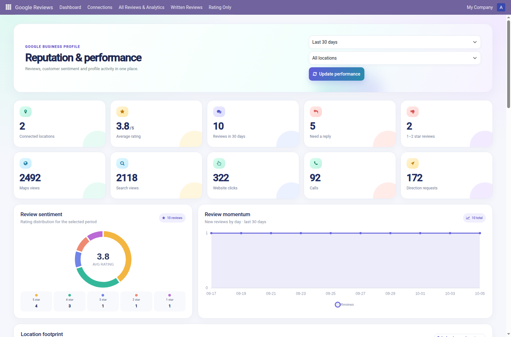
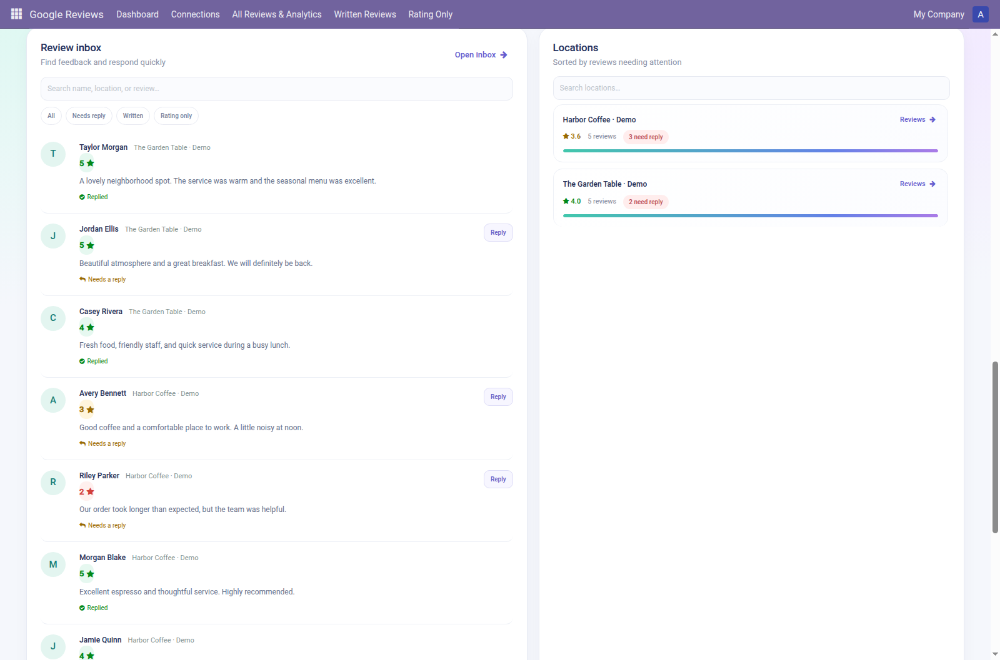

Connect a Google Business Profile and manage customer reviews from your Odoo backend.
Synchronize locations and reviews, see ratings and feedback in Odoo, identify reviews that need a response, and publish replies from the review form.
Review rating and volume summaries, filter by date range and location, inspect review trends, and view available Google Business Profile performance metrics. A location map is available when Google provides coordinates.
These screenshots show the Odoo interface with fictional sample review data.


This release uses the eCube OAuth callback and token service at solution.ecube.pk. The service handles Google's OAuth callback and token exchange; the Odoo connection stores its refresh token in the Odoo database. Installing the addon does not install this service. Google connection and refresh therefore depend on the service being available.
Google account tokens and synchronized Business Profile data are stored in the connected Odoo database. Access to Odoo records should be limited to authorized users, and database backups should be protected. Before production use, configure the Google OAuth consent screen to show the publisher's privacy policy.
Support: faheem.riaz@wags.sa